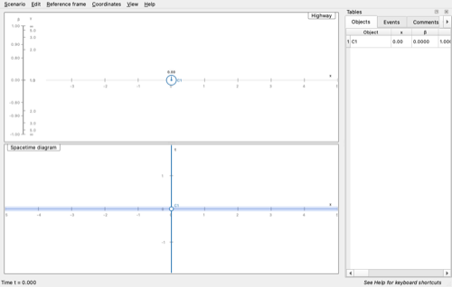
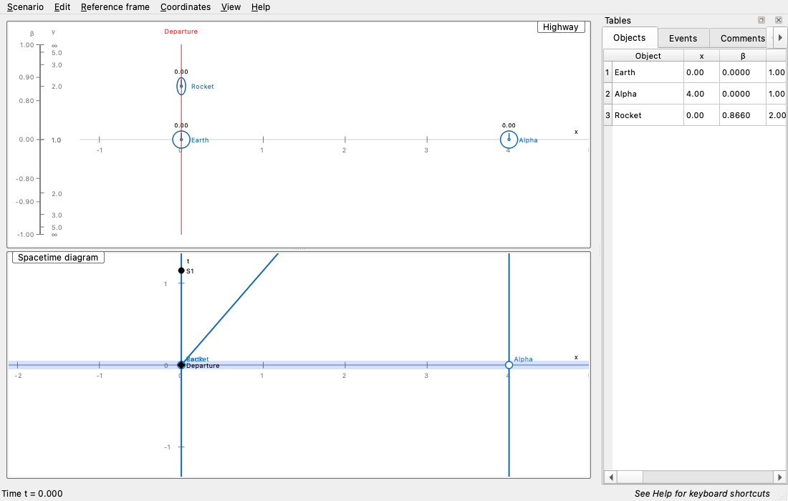
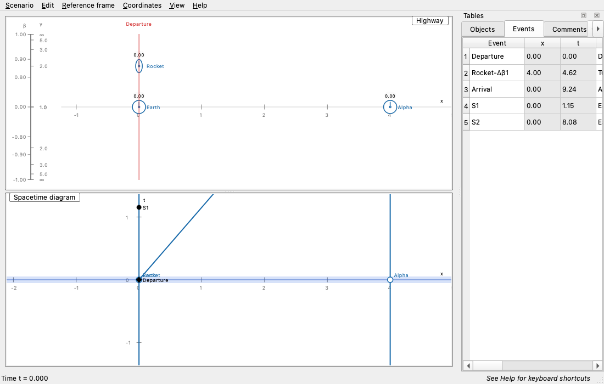
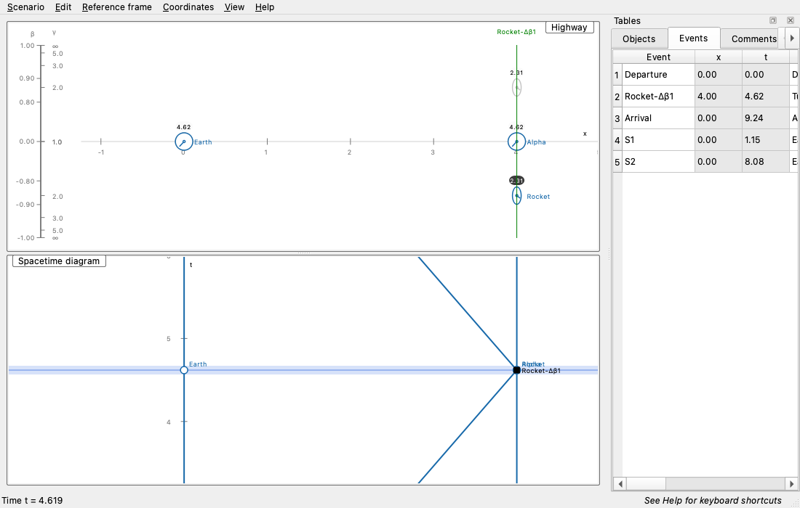
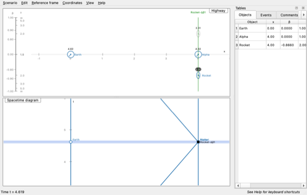
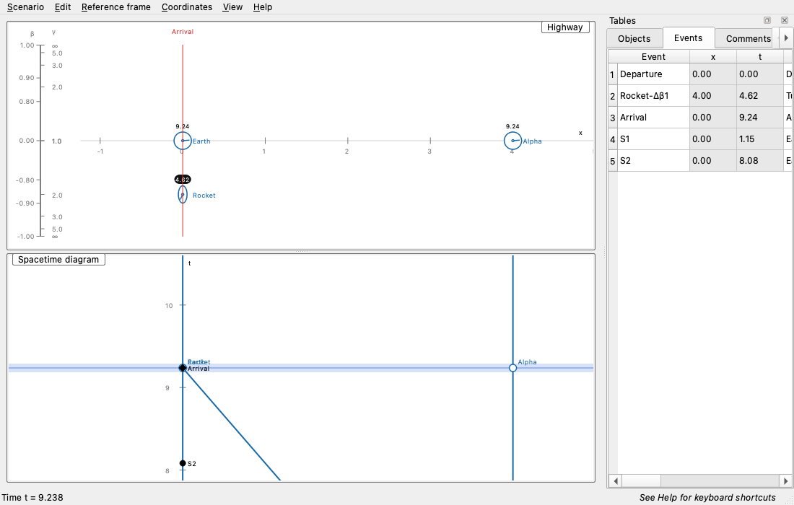
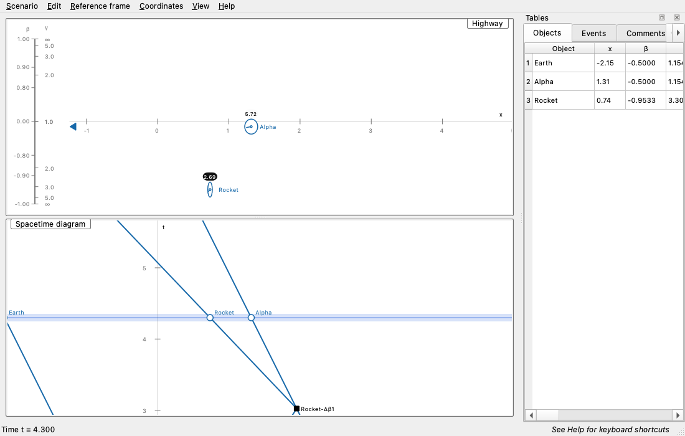
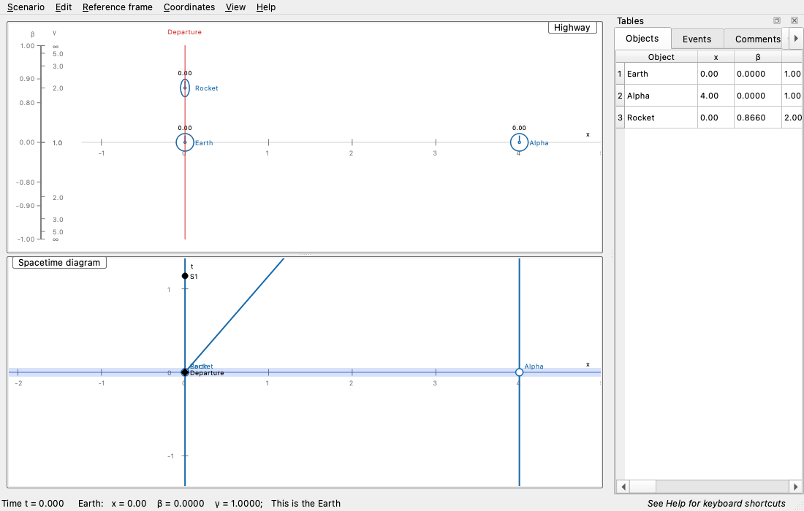

View this help file in your browser
Spacetime is a computer program for developing an intuition for special relativity. It can be used to analyze exercises and projects or to explore relativistic motion independently.
The application has two synchronized displays: the Highway shows a snapshot of objects moving at different velocities, while the Spacetime diagram plots their positions and worldlines over time. Tables and comments are available in the dockable Tables panel; this Help page is available in the dockable Help panel.
Coordinates use units where the speed of light is 1. Position is horizontal and time increases upward. Clocks accumulate proper time along their piecewise-constant-velocity worldlines; flashes travel at the speed of light.
The Highway represents a snapshot of a movie of the objects. Changing the current time changes the snapshot. Objects on the center strip have zero velocity. Objects above the center move right; objects below it move left. The top and bottom lanes correspond to the speed of light and are reserved for light flashes.
The vertical ruler shows β, velocity as a fraction of the speed of light. The scale runs from +1 at the top through 0 at the center to -1 at the bottom and is intentionally nonlinear, allowing more useful velocities near the speed of light to fit on screen. The adjacent γ scale shows the time-stretch factor:
γ = 1 / √(1 - β2)
Moving clocks run slow by the factor γ, and moving rods are contracted by the same factor along their direction of motion.
The horizontal axis represents position and the vertical axis represents time. A worldline traces the trajectory of an object through spacetime. Objects shown on the Highway appear as worldlines here.
The thick blue line is the line of simultaneity for the current time in the current reference frame. Events simultaneous at that time lie on this line. The current time is shown in the status bar. The Highway and diagram share their horizontal scale and pan position.
This tutorial creates a trip from Earth to Alpha Centauri and back. The
bundled scenario scenarios/Trip to Alpha.sce contains the completed
example.
If you make a mistake, use Undo from the Edit menu or the platform-standard Undo shortcut. Undo restores the related object and event changes together.
Start with the default clock, or choose Edit → Create Clock.
Use the Objects table to change its label to Earth and enter a
note. Notes appear in hover details in the status bar.
 |
| Python Spacetime default scenario. |
Right-click an empty Highway position and choose Create clock. Place it four light years from Earth, then adjust its position or beta in the Objects table if needed.
|
| The Objects table edits labels, position, beta, gamma, readings, and notes. |
Create another clock at position 0. Set its gamma factor to 2, then label it
Rocket and add a note. The table accepts beta and formats the
corresponding gamma value.
 |
| Object notes are visible in the table and hover details. |
At the current time, right-click the rocket and choose Set birth here and now. This creates a generated boundary event. Select the Events tab to edit its label and note.
 |
| The Events table displays the departure event. |
Advance time with the Up key or the spacetime diagram scroll gesture until
the rocket intersects Alpha. Right-click the intersection and choose
Create event. Generated velocity-change events receive labels
such as Rocket-Δβ1.
 |
| The turning event is visible in the Events table. |
 |
| The Highway view at the turning time. |
At the turning time, right-click the rocket and choose Program. Drag it to a lane with gamma 2 in the opposite direction, or enter the new beta in the Objects table. A programmed object is shown in green until the edit is completed.
| The programmed rocket is highlighted in green. |
Dragging or editing an object outside Program mode redefines its worldline and removes its birth, termination, and programmed velocity-change events.
Advance time until the rocket meets Earth. Create an event at the
intersection and label it Arrival. Then choose
Set termination here and now on the rocket.
 |
| The completed trip and its events. |
Use Reference frame to set beta or transform up and down. Return to original frame restores the original coordinates. The underlying scenario remains in the original frame while displayed coordinates change.
 |
| The same scenario in a different reference frame. |
Use the Comments tab in the Tables panel to add scenario notes. Choose
Scenario → Save or Save As to write a Java-compatible
.sce file.
 |
| Hover details include object notes in the status area. |
Congratulations. You have created a complete spacetime scenario.
Use Up and Down to advance or rewind time by 0.1. Use the platform modifier with Up or Down for steps of 1.0. The spacetime diagram also responds to vertical wheel or two-finger scrolling. Time advances to the next event when one lies between regular time steps.
Right-click an empty area of the Highway and choose Create clock or Create light flash. Drag the new object or edit its position and beta in the Objects table. A manual position or beta change clears that object's programmed worldline and boundary events.
Right-click an object in either diagram or its row in the Objects table and choose Delete.
Events may be fixed at a worldline intersection, attached to one worldline, or free. Right-click an intersection and choose Create event to create a fixed event. Right-click a worldline to create an attached event. Right-click empty space to create a free event. Free events can be dragged and edited in the Events table; fixed and worldline-attached coordinates are read-only.
Right-click an event in the spacetime diagram or its row in the Events table and choose Delete. Generated boundary and velocity-change events are managed by their object actions.
Right-click an event and choose Construct → Spacetime interval to . . ., then click a second event. The decoration shows whether the interval is spacelike (S), timelike (T), or lightlike (L), its invariant value, and Δx and Δt. Delete it from its context menu. Press Esc or click empty space to cancel an unfinished selection.
Right-click an event and choose Construct → Invariant hyperbola. The decoration follows the event as it moves and can be deleted from its own context menu.
Right-click an event and choose Construct → Light cone. The light cone follows the event and can be deleted from its own context menu.
Right-click an object in the Highway or its row in the Objects table and choose Jump to this object. The display changes to that object's rest frame.
Transform up and Transform down apply a relative beta of +0.05 or -0.05 to the current frame. Use the Reference frame menu or Shift+Up and Shift+Down. Shift+0 returns to the original frame.
Drag an empty area horizontally, use Left and Right, or use the platform modifier with Left and Right for a larger movement. The Highway and spacetime diagram remain synchronized. The horizontal view range is saved in the scenario.
Clocks and flashes can change velocity at programmed events. Right-click an object in the Highway and choose Program, then drag it to a new lane or edit its beta. The object is green while it is being programmed. For flashes, programming changes the direction between beta -1 and +1.
Entering a new programmed beta removes a termination after that point and continues the programmed worldline. Changing an object manually outside Program mode removes its programmed changes.
Right-click an object in the Highway and choose Set birth here and now or Set termination here and now. Once set, the corresponding action becomes Cancel birth or Cancel termination. Generated boundary events cannot be dragged or edited.
Choose View → Zoom in or Zoom out, use Plus or Minus, or pinch on a trackpad. Both displays share the horizontal scale.
The tables list all objects and events. White cells are editable; gray cells are read-only. Right-click a row for its context menu. The Event table supports horizontal scrolling, and its Note column resizes to fit its content.
Choose the Comments tab in the Tables panel to write scenario comments. Comments are saved with the scenario and preserve multiline text.
The original Spacetime program was developed at MIT and funded through Project Athena in the late 1980s. MIT undergraduates developed the original program under the supervision of Edwin F. Taylor for use in a special relativity course. This Python version reimplements the essential behavior with a contemporary Qt interface while retaining Java-compatible scenario files.